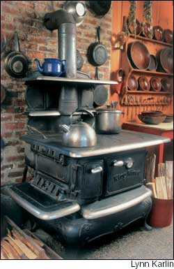
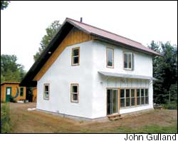
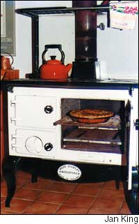
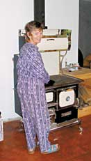
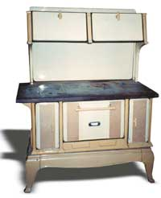
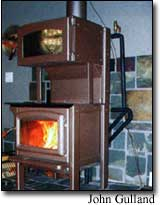

The wood cookstove is an icon of rural America as powerful as the split-rail fence and horse-drawn wagon. Whether it’s the solid, traditional look of cast iron, or the eye-catching gleam of nickel plate, just a glimpse of a cookstove can elicit feelings of nostalgia and, for many, a longing for ownership. So enduring is such a cookstove’s appeal that even today you can buy new models that are in almost every way replicas of the ones your grandparents and great-grandparents might have used. In fact, it would be hard to find a truly modern wood cookstove, even if you wanted to buy one.
These old-fashioned stoves still attract a loyal following, and it’s easy to understand why. Cookstoves combine stove-top cooking, baking, water heating and home heating, all in a single appliance that is steeped in tradition and powered by a readily available, renewable fuel. As with so many combination devices, cookstoves perform each function with varying degrees of competence, but if the following owners and users of antique and new wood cookstoves are any guide, the problems that do arise are easily overlooked. These folks are smitten.
In the big country kitchen of Cordelia Kaylegian’s century-old home in North Henderson, Ill., her ‘Glorious’ cookstove occupies a place of pride. Built decades ago by the Wehrle Co. of Newark, Ohio, the stove is resplendent in its butter-yellow and beige porcelain finish. It is typical of most cookstoves in its arrangement of basic components: The firebox is on the left, the water reservoir is on the right, a baking oven is between them and the warming oven is above. She found the stove through a newspaper ad several years ago, and paid $450, about one-tenth of the cost of an equivalent new wood cookstove.
Kaylegian uses her ‘Glorious’ for cooking and for making the pies and cakes she sells at local farmer’s markets. Although she also owns a gas stove, Kaylegian says she finds baking with the wood cookstove more satisfying and enjoys the flavor the wood smoke adds to the food. “Breads taste so much better, and so do stews that simmer on the back of the stove.”
Some cookstove owners find the ovens difficult to bake with, because many cookstove ovens do not heat evenly, and can produce “hot spots” that make pot or pan placement critical. But there are many tricks to using a cookstove, and Kaylegian knows her share. One strategy is to place a pan of water in the oven near the firebox, which absorbs some of the excess heat from that part of the oven. Also important is the type of wood that is burned; Kaylegian uses mostly oak, a slow, clean-burning wood, and stays away from quick-burning pine.
Provided it is in good condition and used correctly, just about any cookstove will do a fine job of baking.“The only thing I don’t have the nerve to bake in the oven is angel food cake,” she says.
Kaylegian doesn’t use her cookstove as a primary heat source, but during the winter she welcomes the warmth of the stove. When she’s cooking, she just sets her propane furnace thermostat to 68 degrees, which keeps the house at a comfortable temperature.
Those living off the grid are in an even better position to appreciate a wood cookstove’s many functions. Frank Tettemer and Cheryl Keetch live in a house in rural Ontario powered by solar-electric panels and a wind turbine. Inside, a Waterford Stanley-brand cookstove is their primary heat source, wintertime cooker and baker of meals, and producer of their domestic hot water supply. “I’ve owned it since 1986,” Tettemer says, “and it’s been used in four different houses.”
Tettemer’s loyalty to his stove can be explained in part by how well its design fits his home-energy needs. Most cookstoves have smaller fireboxes than woodstoves designed primarily for heat. But Tettemer’s stove was built in Ireland, and designed to burn either wood or peat; its firebox volume is larger than traditional North American cookstoves and does permit a reliable overnight burn. A small propane boiler provides supplementary in-floor heating and water heating when needed.
Tettemer and Keetch’s cookstove produces more hot water than many cookstoves, which often have water reservoirs that heat only a few gallons at a time. Instead, their stove has a more complicated hot water system in which water circulates through a collector in the firebox and back to a storage tank. Such systems can heat a larger volume of water, but must be carefully designed and installed, and users must understand them and keep track of their performance to make sure that the systems are operating safely and reliably.
Like all other aspects of wood burning, the production of domestic hot water is very much hands-on. Tettemer, a designer and builder of mechanically advanced off-grid houses, designed his own system, and he says his stove sometimes produces more hot water than he needs. “With the stove running hard during cold weather, the water sometimes overheats and causes the relief valve to dump water into a drain, unless we use some of the hot water,” he says.
Tettemer corrected that problem when he designed a hot water system for his neighbor Skye Faris, who bought a Heartland-brand ‘Sweetheart’ cookstove for her straw bale home. “It’s just a matter of matching collector output, storage capacity and hot water consumption patterns,” Tettemer says. “I’ll fix my own system when I have time to take half my kitchen apart to replace the tank.”
Faris has had great success with her cookstove, finding that in addition to providing reliable hot water, it also supplies adequate heat to warm her 1,000-square-foot straw bale home. Faris’ stove has a small firebox that doesn’t hold enough wood to keep a fire burning for the entire night, but her house’s superinsulated walls hold heat so well that this isn’t a problem. “I never get up in the night to put more wood on, even in the coldest weather,” she says.
Tim King of Long Prairie, Minn., is another cookstove owner who gets maximum use from his stove. He and his wife, Jan, have relied on their Waterford Stanley for cooking, baking, and home and water heating since they built their 1,200-square-foot house in 1984. Although the cookstove alone isn’t enough to heat their home, Tim says they have found a workable solution to this problem: two woodstoves. A wood-fired space heater is their main heat source, and the wood cookstove provides supplemental heat.
The wood cookstove often is seen as a throwback to simpler times, and in many ways that’s exactly what it is because cookstove designs haven’t changed much over the last 100 years.
The most recent design change was more than 10 years ago, when some manufacturers promoted the addition of gaskets on loading and ash pan doors as the latest “state-of-the-art” cookstove feature. It wasn’t a new idea, since woodstove manufacturers started using gaskets to make their stoves “airtight” back in the 1970s. Simply sealing up the stoves didn’t deliver the promised efficiency, but it did result in smoky fires, as well as a rash of chimney fires. Improving the efficiency and reducing the smoke emissions of wood-burning stoves involves a lot more design work than adding gaskets to doors.
The wood-heat industry has yet to design a truly clean-burning wood cookstove, although it has succeeded on that score with wood-burning space heaters. Back in the 1980s when the Environmental Protection Agency (EPA) established smoke-emission limits for new woodstoves, cooking ranges were given an exemption on the basis that the market was so small enforcing controls would be a hardship to both manufacturers and the mostly rural users of these products. But the exemption stifled innovation, and as a result, clean-burning, efficient wood cookstoves still are not commercially available.
Housing design has changed significantly over the last century, and we now live in more tightly constructed homes and are much less tolerant of wood smoke spilling into our living spaces. The result is that some of the standard design characteristics of traditional cookstoves can create problems for today’s users. If a cookstove has captured your heart, here are a few of the most common obstacles you should be prepared to navigate:
• Inefficient burning. In a wood cookstove, flames rise directly to the underside of the cooking surface, which might be an advantage for quick heating, but also results in incomplete and sooty combustion by quenching the flames before all the smoke has burned. Another problem is that the fire rests on a grate in most cookstoves and receives its combustion air from below. Wood burns best on a solid surface with the combustion air reaching the fire at or above coal-bed level, and, in fact, no stove of “underfire air” design has ever passed the EPA smoke-emission limits.
Cookstove users can partially overcome this problem by controlling the amount of wood burned at one time, which is more effective than turning the air control down. Tettemer recommends adding at least three small sticks per load and placing them in a crisscross pattern so they flame brightly. He admits that the overnight fire in his cookstove is “an intentional smolder” that he knows will deposit a thin layer of creosote - dark, flammable tar - in the oven passages. He makes up for this by cleaning the oven passages monthly.
• Smoke leakage into the living space is another drawback of the traditional design. The cook surface is porous because the top plate holds four or six round cook plates. The resulting gaps create ready sites for smoke leakage under some conditions. In baking mode with the bypass damper closed, the exhaust gases are forced to go down one side and then under the oven. Hot air rises, and hot exhaust gases are no different. So, when chimney draft declines because of low firing and a cold chimney, smoke can find paths through the gaps in the cooktop instead of being drawn down around the oven. This slow leakage of smoke into the house is Tettemer’s biggest complaint about his cookstove. He avoids the problem by leaving the bypass damper open a crack to ensure that even when draft is low, the smoke will go up the chimney instead of into the room.
King says that one of the best things new cookstove owners can do is to invest some time in learning how to use the oven bypass damper. “It took us a long time to learn how to use it,” he says. “Make sure you know the controls.”
When open, the bypass damper allows the exhaust to pass directly from the firebox into the flue when starting and loading the stove. When closed, it forces the hot exhaust across the top of the oven, down the far side and then under the oven into the flue. Smoke-free operation and successful baking both depend on the correct use of the damper.
Most traditional designs of cookstoves have a lever to lift the plate over the firebox so wood can be loaded from the top. This may be convenient but it often results in smoke leaking into the room. The reason is no mystery: Hot smoke not only wants to rise, it always takes the path of least resistance. By lifting the top plate, an opening more than a square foot in area is created, while the entrance to the flue where the smoke should go is far smaller.
Even in systems of perfect design, with the chimney running straight up and no elbows in the flue pipe, top loading is likely to produce spillage. Although both the Tettemer-Keetch and Faris households have excellent venting systems, they both recommend against top loading because of the problem of leaking smoke.
In Illinois, Kaylegian loads her cookstove from the top and doesn’t find smoking to be a problem. Like King, she recommends new users first figure out what all the dampers and controls do and how to use them. She also cautions against burning wet wood and suggests taking the time to learn your stove’s idiosyncrasies. But she says not to be intimidated by the challenges of using a wood cookstove. “No one ever taught me how to cook on my stove,” she says. “I just did it.”
Once you learn the quirks and mannerisms of a cookstove, you may be unwilling to trade it in for a more conventional appliance. Kaylegian says she has reconciled herself to not using her stove during the hottest days of the summer, but for 10 months out of the year, she definitely prefers it to her gas stove. And King says, “There may be better stoves, but ours has stood by us for 20 years. It’s an old friend.”
John Gulland is executive director of the Wood Heat Organization, www.woodheat.org, in Killaloe, Ontario. He develops training programs for wood-heat professionals, is a consultant on wood heat to the Canadian government, and uses wood fuel for cooking and heating in his home.
New wood cookstoves can cost as much as $5,000, so buying a used stove at a reasonable price is an appealing alternative. If you are lucky enough to find a used wood cookstove, the next challenge is to see if it is worth the asking price and suitable for use.
To inspect an old cookstove you’ll need: work clothes, leather gloves, a flashlight and a screwdriver. Make sure the cookstove has enough clear space around it so that you can get a good look at the back of the stove.
The first thing to establish is that all the parts are in place and functional. Finding replacement parts for old cookers is always difficult and often impossible, so starting with a complete stove is essential. Firebox parts are often the first to go, but luckily they are the simplest parts to replace. Sometimes a burned-out grate can be replaced with a facsimile grate from another stove. The casting on the oven side is another common failure point. With some care, a replacement can be formed using castable refractory, a high-temperature concretelike material.
Once you have determined the status of the parts, check that the cooking surface is level. Any sagging is evidence that the stove has been used hard for heating and may not have been maintained well. A sag in the top means that the supports for the cook plates are warped and in need of replacement, a bad sign that may condemn the stove to the scrap yard. On the other hand, a flat surface means the stove has been well used and maintained.
The structure of most cookstoves is sheet steel, to which cast-iron parts are bolted. This sheet-steel body can rust, which is how many stoves are ruined. Key areas to check for rust are the corners of the oven liner, oven-door hinge mounts and around the back where the cast iron firebox extension and flue boot (flue pipe attachment fitting) are mounted. Use your screwdriver to poke these areas. Poke hard, and if the metal gives way, the stove body is shot and so is the stove. You might be able to patch holes with furnace cement, temporarily putting off the inevitable, but chances are the stove would not be pleasant to live with or cook on.
Refurbishing antique cookstoves is an expensive proposition. Years ago, when I owned a woodstove store, we had a cookstove specialist on staff. We agreed to rebuild a stove that had been in the same family for generations. We took it completely apart and fabricated a new sheet-steel body to replace the original rusted-out one, fixed some parts and had others nickel plated. The result was eye-popping, but the invoice was a cool $5,500.
How much should you be prepared to pay? The value can only be determined by the seller and buyer at the time of the sale, but the spectrum ranges from cookstoves that are beyond repair and have no practical value to fully restored, like-new antiques that can be worth several thousand dollars. - John Gulland
I wanted a wood cookstove for my house, but when I couldn’t find one that combined efficient whole-house heating with surface cooking, baking and water heating, I decided to build my own.
Starting with an EPA-certified wood heater as the basis, I fabricated an oven section and mounted it on top. A large stainless steel tank for water heating covers the back of the stove. After three years of tinkering and making extensive modifications, I have a stove that meets all of my needs.
The design resolves the problems that had prevented me from opting for a traditional cookstove. It has a small footprint, taking up no more floor space than a regular heater. The cook surface is solid so it has no leakage sites, and the oven bypass doesn’t force the exhaust to go downward. The result is smoke-free operation under all conditions. A full-sized, advanced-technology firebox produces enough heat for my 1,500-square-foot home, no matter how cold the weather. The fire burns so cleanly that a single mid-winter sweeping of the oven passages yields only a cup of soot.
However, I did encounter a few problems. In addition to the difficulties of running this wood-burning experiment inside my house, the stove also caused some resistance from my home insurance company. The modifications to the original stove rendered void its safety certification, along with its close clearances and warranty. Only my experience and credentials as a wood-heat specialist convinced the insurer that the stove did not pose an additional fire risk. Also, the stove isn’t as ugly as it could have been, but it definitely lacks the charm and nostalgia of a traditional wood cookstove.
I don’t recommend trying to build your own stove because for most people the benefits would not be worth the hassle, but I was encouraged by the fact that I was able to build a cleaner-burning, more-efficient wood cookstove. My hope is that my stove will inspire some enterprising stove manufacturer to build a cookstove that is specially designed for use in modern houses. - John Gulland
|
 This King Kineo cookstove belonged to Scott and Helen Nearing, the legendary homesteading couple known for their philosophy of simple living. |
 Finding that it provides plenty of heat for both floors of 1,000 square-foot straw bale home during long winters in rural Ontario. |
 Tim and Jan King of Long Prairie, Minn., use their Waterford Stanley wood cookstove for space and water heating, as well as for cooking and baking. |
|
 Skye Faris has had great success with her ?Sweetheart? cookstove, |
 Cordelia Kaylegian bought this antique ?Glorious? stove at a fraction of the price of a new wood cookstove. |
 John Gulland built this energy-efficient wood cookstove for his home. |